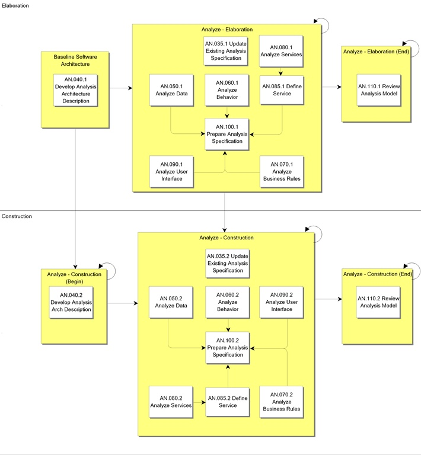
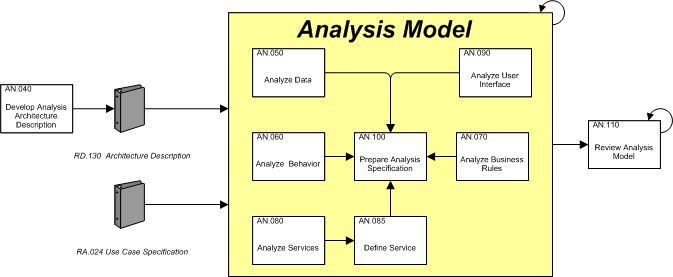

OUM |
Process Overview |
||
Method Navigation |
Current Page Navigation |
||
|
|
||||||||
The purpose of Analysis is to refine and structure the requirements into a conceptual object model, called the Analysis Model. Most simply put, the Analysis Model is the collection of all of the analysis related artifacts, just as the Use Case Model documents the system’s functional requirements.
The Analysis Model is intended to provide a more precise understanding of the requirements and provides details on the internals of the system, where the Use Case Model looked at the system from the viewpoint of the actor or user. Further, the Analysis Model begins to describe the system using the language of the developers as opposed to the requirements that are expressed requirements in the language of the user, or of the business.
Performing Analysis contributes to a sound and stable architecture and facilitates an in-depth understanding of the requirements. Many of the work products produced during the Analysis process describe the dynamics of the system as opposed to the static structure. The Analysis Model is also considered the first cut of the Design Model (see the Design process), since it contains the analysis classes that are further detailed during the Design process.
The recommended approach for completing Analysis is based on the Unified Software Development Process. The standard and recommended notation is to use the UML. The task guidance associated with many of the core Analysis tasks is, therefore, UP and UML oriented. Wherever possible, however, we have tried to provide suggestions for alternate approaches or notations that might be employed. For example, while the class diagram is the UML standard and is strongly recommended for modeling data and operations an entity-relationship diagram (ERD) and a functional decomposition chart may be substituted for this purpose.
As part of the Develop High Level Software Architecture (RA.035) task, the system use cases that you have defined were placed into groupings called “Iteration Groups.” These groupings are based on the importance and architectural-significance of the use cases. This may mean that only a portion of the use cases in a use case packages will be analyzed during a given iteration of Elaboration or Construction. This is considered to be the recommended practice and helps to support the “risk-focused” principle of OUM.
The main work product or output of the Analysis process is the Reviewed Analysis Model that includes a set of analysis classes (class diagrams) that realize the use cases. The Analysis Model is comprised of all of the Analysis work products, resulting from the following Analysis tasks, as appropriate:
In addition, the Conceptual View (AN.040) is added to the Architecture Description (RD.130) that was initially developed in the Business Requirements Process and updated in the Requirements Analysis (RA.035) process.
 This process overview is written from the perspective of a Full Method View, utilizing ALL of the activities and tasks in this process. Therefore, all of the following sections provide comprehensive information. If your project is utilizing a tailored approach (for example, Technology Full Lifecycle View, Application Implementation View, Middleware Architecture View), not everything in this overview may be appropriate for your project. Please keep this in mind, especially when reviewing the Key Work Products and Tasks and Work Products sections. You should use OUM as a guideline for performing all types of information technology projects, but keep in mind that every project is different and that you need to adjust project activities according to each situation. Do not hesitate to add, remove, or rearrange tasks, but be sure to reflect these changes in your estimates and risk management planning. You should also consider the depth to which you address and complete each task based on the characteristics of your particular project or project increment. See Oracle's Full Lifecycle Method for Deploying Oracle-Based Business Solutions for further information on the scalability and adaptability of OUM.
This process overview is written from the perspective of a Full Method View, utilizing ALL of the activities and tasks in this process. Therefore, all of the following sections provide comprehensive information. If your project is utilizing a tailored approach (for example, Technology Full Lifecycle View, Application Implementation View, Middleware Architecture View), not everything in this overview may be appropriate for your project. Please keep this in mind, especially when reviewing the Key Work Products and Tasks and Work Products sections. You should use OUM as a guideline for performing all types of information technology projects, but keep in mind that every project is different and that you need to adjust project activities according to each situation. Do not hesitate to add, remove, or rearrange tasks, but be sure to reflect these changes in your estimates and risk management planning. You should also consider the depth to which you address and complete each task based on the characteristics of your particular project or project increment. See Oracle's Full Lifecycle Method for Deploying Oracle-Based Business Solutions for further information on the scalability and adaptability of OUM.
This process flow for this process follows:

The main goal of the Analysis Process is to detail the Analysis Model that will be used to implement the requirements.

A good starting point for the Analysis process is to review the High-Level Software Architecture Document portion of the Architecture Description (RD.130). This document is continually modified as the project progresses. Review the High-Level Software Architecture Description, and the Domain Model (RD.065) to identify the components and the interactions that can occur between these.
The primary objective in the Analysis process it to create the Analysis Model. This is accomplished by analyzing the current use cases to determine how each use case should be realized. The result from the Develop Use Case Model (RA.023) and Develop Use Case Details (RA.024) together with the Analysis (AN.040) updated Architecture Description (RD.130) are used as input into the Data Analysis (AN.050), Behavior Analysis (AN.060) and User Interface Analysis (AN.090). The use cases, written in a language understandable for the customer, are analyzed to identify the analysis classes that are needed to perform each use case's flow of events. These are written in the language of the developer. The purpose is to identify the internals of the use cases, and to remove inconsistencies and redundancies among the requirements. This is an important step towards design and implementation. The analysis classes are organized in packages, and an initial outline of the significant entity classes is created. The attributes, responsibilities and relationships between them are also identified.
As you progress in the use case realization, you analyze the classes you have identified. The focus of this analysis is still on the functional requirements. During this analysis, add more detail such as attributes, associations, methods, roles, responsibilities, specializations and generalizations that will be necessary to support the functional requirements. However, during this detailed analysis, you may not be concerned in defining the exact types of the attributes and method parameters. This analysis still produces a higher-level definition of a design class. Also, during this task, you typically create the different class diagrams for the different types of classes; the Entity, Boundary and Control Class Diagrams. For complex classes, normally those that participate in multiple use cases, you should also consider creating State Transition Diagrams to clarify the stages, through which the class may pass during its life cycle.
Interaction diagrams are created to validate the functionality defined in the analysis classes. The interaction diagrams can be created for each scenario in the use cases of the Use Case Model. The task begins with the selection of the interaction diagram. There are two interaction diagrams; the sequence diagram and the collaboration diagram. During this whole process you should also attempt to identify commonalities between the use cases and their analysis classes. This is necessary to be able to identify possible reusable components.
The final task in the Analysis process is to review the Analysis Model. A team consisting of system analysts, ambassador users, designers, architects, and testers reviews it. The review of the Analysis Model is both technical and functional in nature. The system analysts, and ambassador users focus on determining whether the analysis is in line with the actual requirements. Often, it is when the requirements are detailed, that discrepancies in the understanding of the requirements become visible. However, as the Analysis Model is written in the language of the developer, the ambassador users may need assistance in understanding the model. The other reviewers will review both the technical and functional parts of the Analysis Model.
As a result of the review, feedback is recorded as an input to the next iteration of the tasks. The feedback is prioritized following the MoSCoW principle, as there might not be sufficient time and resources to include every change request. Also, there are many different types of changes. Attempt to handle all through MoSCoW, but some changes may affect scope and should therefore be handled differently following a formal change control procedure.
The Analysis Process tasks are performed iteratively both in the Elaboration and the Construction phase, but the further in the project, the more details are added. The iteration starts with the Analysis tasks, and continues with the Design tasks. At the end of each iteration in the Elaboration phase, the result is fed into a new Functional Prototype (IM.010) that is reviewed by the ambassador users. The feedback from the validation of the Functional Prototype (RA.085) is prioritized and fed into the next iteration of the process, or if it was the last iteration, into the Construction phase.
In the Construction phase, the iteration continues with Implementation tasks that ensures that components and database is created following the updated analysis and design. Finally, the iteration continues with Testing tasks before the result goes into the next iteration until the last iteration has been performed.
*This process has Application Implementation supplemental process guidance.
This process has supplemental guidance that should be considered if you are doing an application implementation. Use the OUM Application Implementation Supplemental Guide to access all application implementation supplemental information. You can also go directly to the Analysis process supplemental guidance.
The tasks and work products for this process are as follows:
| ID | Task | Work Product |
|---|---|---|
Elaboration Phase |
||
AN.035.1 |
Update Existing Analysis Specification | Updated Analysis Specification |
AN.040.1 |
Develop Analysis Architecture Description | Architecture Description |
AN.050.1 |
Analyze Data | Data Analysis |
AN.060.1 |
Analyze Behavior | Behavior Analysis |
AN.070.1 |
Analyze Business Rules | Business Rules Analysis |
AN.080.1 |
Analyze Services | Service Portfolio - Proposed Services |
AN.085.1 |
Define Service | Service Definition |
AN.090.1 |
Analyze User Interface | User Interface Analysis |
AN.100.1 |
Prepare Analysis Specification | Analysis Specification |
AN.110.1 |
Review Analysis Model | Reviewed Analysis Model |
Construction Phase |
||
AN.035.2 |
Update Existing Analysis Specification | Updated Analysis Specification |
AN.040.2 |
Develop Analysis Architecture Description | Architecture Description |
AN.050.2 |
Analyze Data | Data Analysis |
AN.060.2 |
Analyze Behavior | Behavior Analysis |
AN.070.2 |
Analyze Business Rules | Business Rules Analysis |
AN.080.2 |
Analyze Services | Service Portfolio - Proposed Services |
AN.085.2 |
Define Service | Service Definition |
AN.090.2 |
Analyze User Interface | User Interface Analysis |
AN.100.2 |
Prepare Analysis Specification | Analysis Specification |
AN.110.2 |
Review Analysis Model | Reviewed Analysis Model |
The objectives of the Analysis process are:
Refer to Key Work Products for a complete list of key work products in OUM.
The following roles are required to perform the tasks within this process:
| Role ID | Name | Responsibility |
|---|---|---|
Implementing Organization |
||
| APS | Application / Product Specialist | Provide knowledge and guidance regarding the functionality, capabilities and implementation strategies for the product(s) being implemented. |
| BA | Business Analyst | Analyze the business rules. Analyze services. Lead facilitated sessions and develop resulting storyboards. Prepare Analysis Specification. |
| DES | Designer | The designer defines and maintains the responsibilities, attributes, relationships and special requirements of the classes making sure that each class fulfills its requirements. This person is also responsible for the analysis of packages within which the classes are maintained. There may be several designers depending on the size of the project, each of which may be responsible for certain classes and packages assigned to them. |
| DV | Developer | Review the Behavior Analysis in order to assure that they are compatible with the architecture. This person is also responsible for analyzing the more complex packages and classes. Review Analysis Model. Present the Analysis Model for review. |
| QM | Quality Manager | Review Analysis Model. |
| SAN | System Analyst | Assist the team of designers to create and finalize the Data Analysis, verifying if the business goals and requirements have been captured. Review Analysis Model. |
| SA | System Architect | Lead the development of the updated Architecture Description. Participate in definition and review of the Architecture Description. Develop the Data Analysis and participate in the definition and review of the analysis classes to gain an understanding of the application and its architecture. Participate in definition and review of the Behavior Analysis to gain an understanding of the application and its architecture. Analyze services. Review Analysis Model. |
Customer (User) |
||
| KEY | Ambassador User | Verify that the detailing of the requirements are in line with the higher level requirements, that business and system objects are taken into consideration, and that priorities are respected. Review Analysis Model. |
The critical success factors of this process are:

Copyright © 2006, 2016, Oracle and/or its affiliates. All rights reserved.